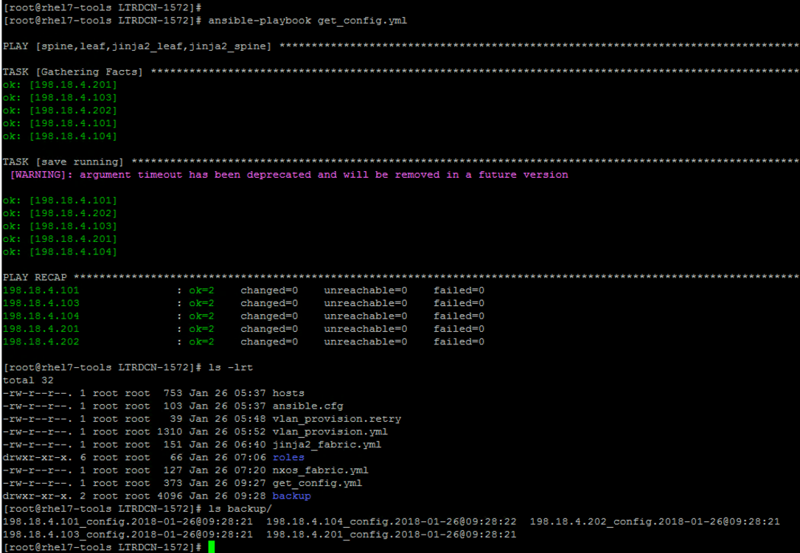
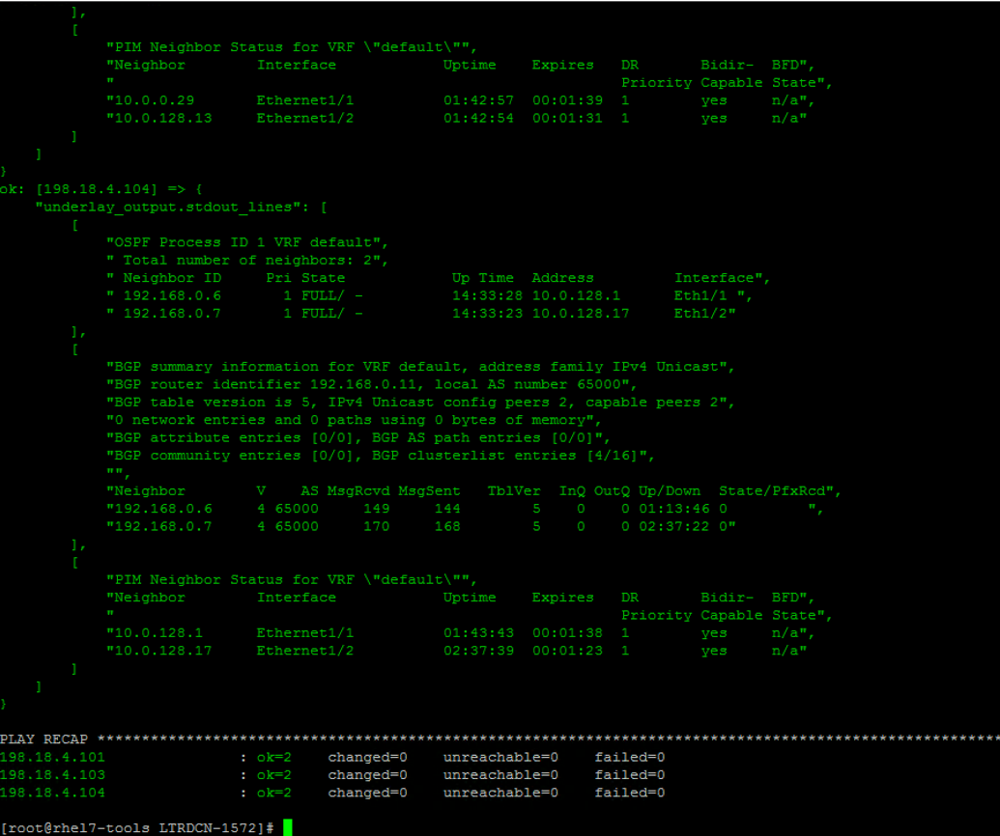
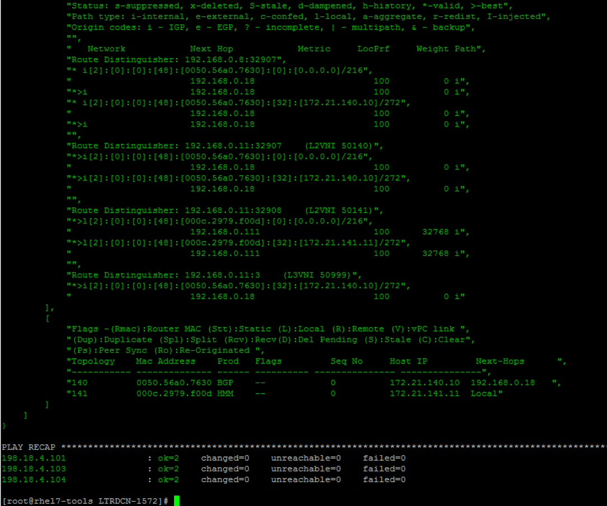
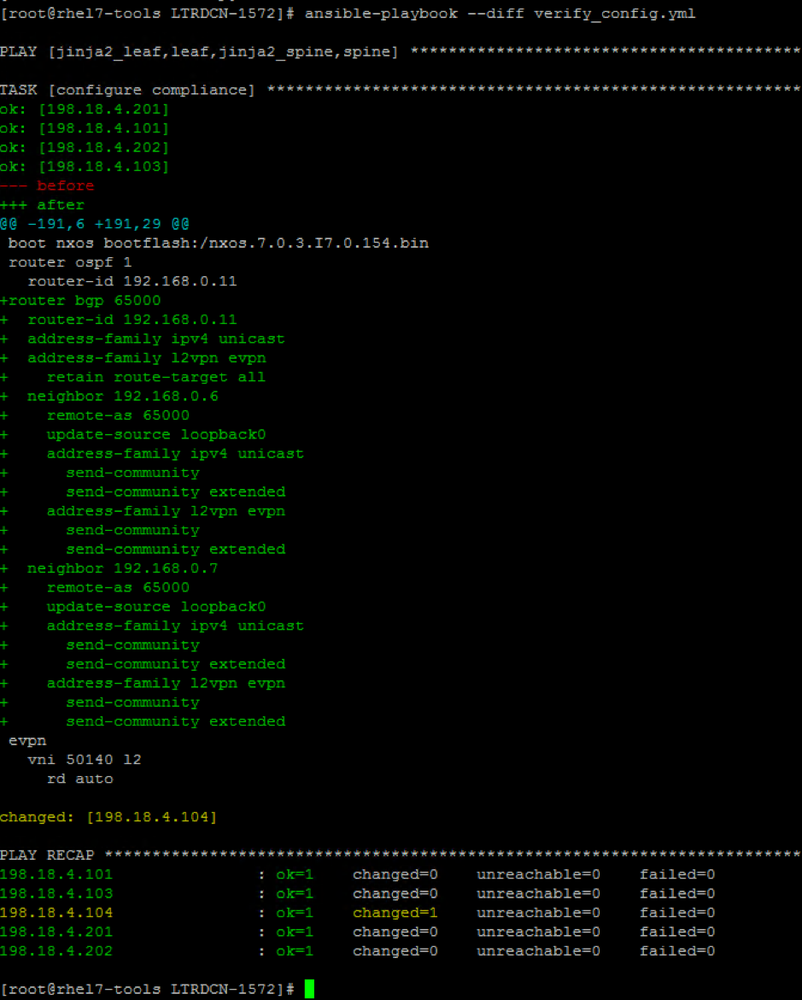
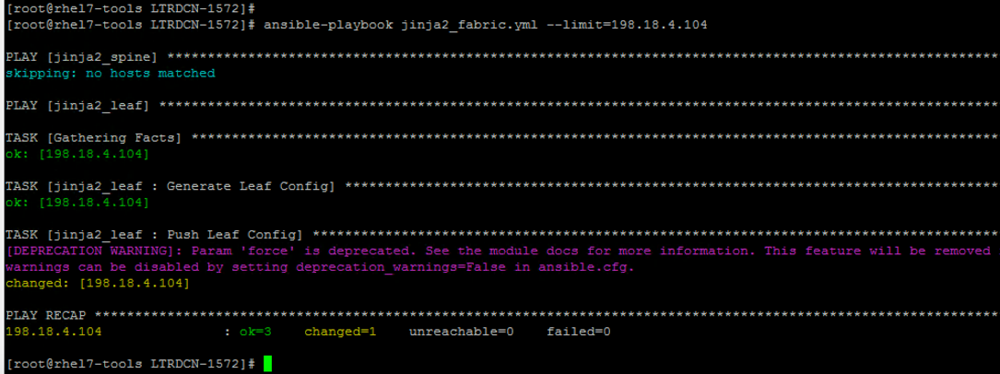
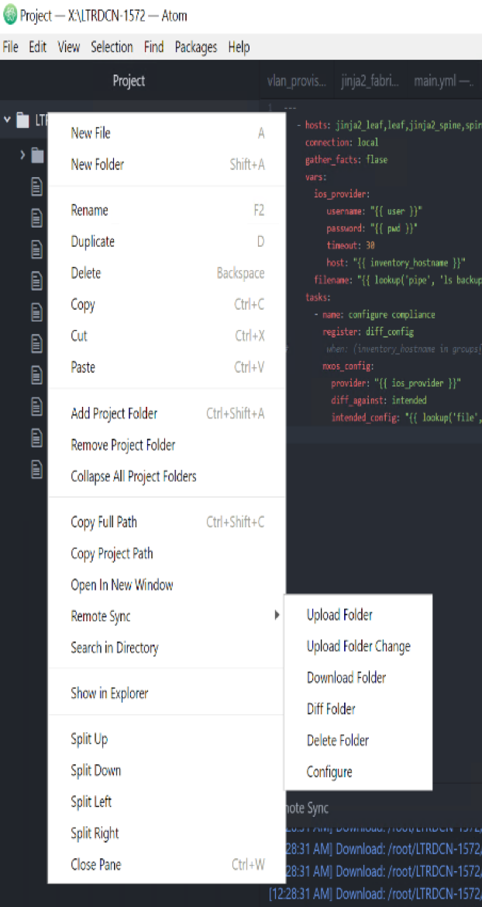
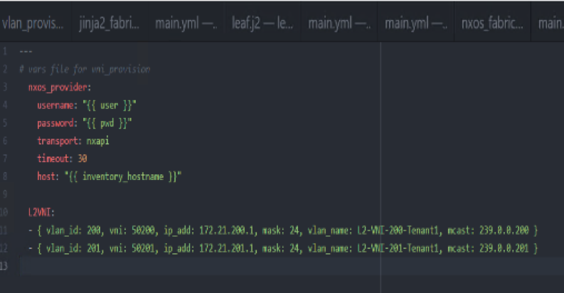
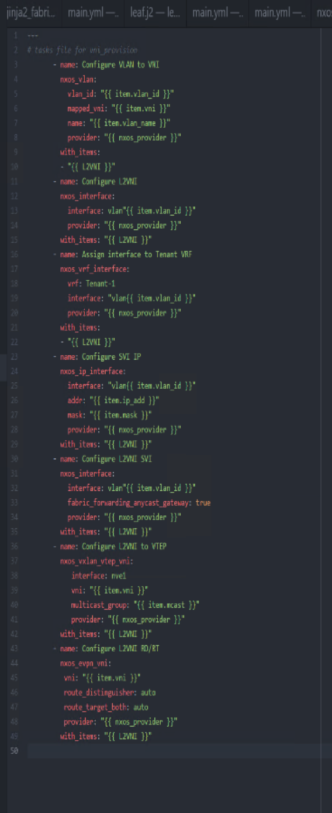
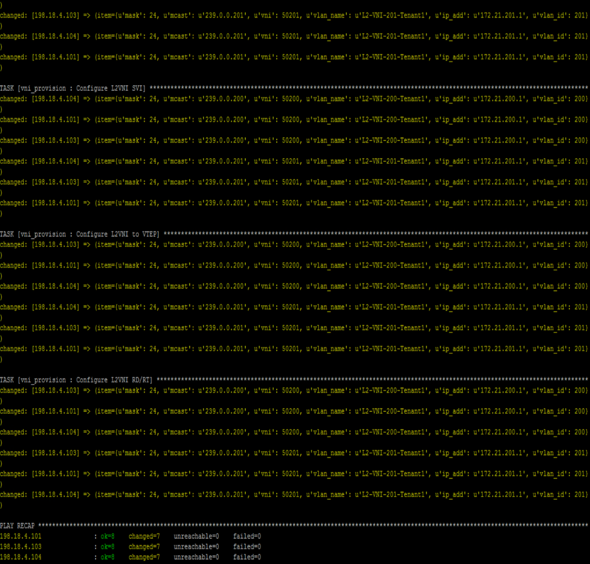
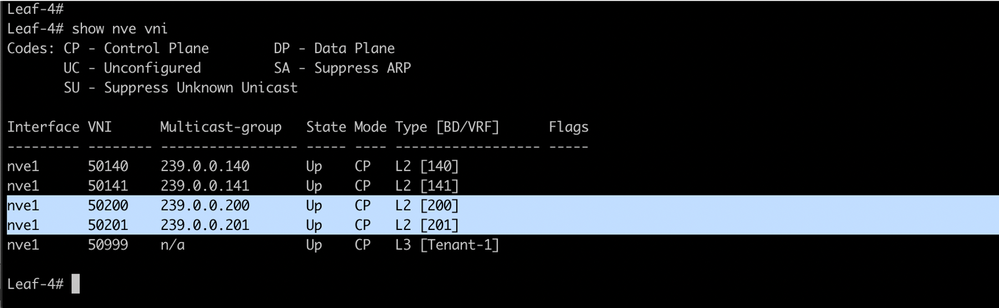

Task 5: Day 2 operation using Ansible
In this section, we will use automation to perform following day 2 operation tasks.
- Backup running configurations on all leaf and spine switches
- Verify underlay ospf, bgp and pim neighbors
- Verify overlay nve peer, host route, bgp update
- Baseline configuration comparison
- Add new VNIs into the existing fabric
Step 1: Backup running configurations
In this section, you will use ios_config module to backup running configuration on each switch, the backup file will be saved to a local “backup” folder. The backup argument create a full backup of the current running-config of each switch. The backup file is written to the backup folder in the playbook root directory. If the directory does not exist, it is created.
-
On Atom, open up the project folder “LTRDCN-1572” and create new file under
LTRDCN-1572. Name the new fileget_config.yml. -
Click
FileandSave. This will save the playbook, and also ftp the playbook to Ansible server using pre-configured “remote-sync” package.
---
- hosts: spine,leaf,jinja2_leaf,jinja2_spine
connection: local
vars:
ios_provider:
transport: nxapi
username: "{{ user }}"
password: "{{ pwd }}"
host: "{{ inventory_hostname }}"
tasks:
- name: save running
nxos_config:
provider: "{{ ios_provider }}"
backup: yes
timeout: 20
-
On the Ansible node (using MTputty via SSH), run “get_config.yml” playbook and verify the backup configurations in “backup” folder by using below commands:
[root@rhel7-tools LTRDCN-1572]# ansible-playbook get_config.yml [root@rhel7-tools LTRDCN-1572]# ls -lrt [root@rhel7-tools LTRDCN-1572]# ls backupYou may further view the contents of the files under backup folder by using cat, less or more commands. Below screenshot shows the output of above commands

Step 2: Verify underlay and overlay
In this step, you will verify underlay and overlay operation using ansible playbook. The playbook will be applied to all leaf switches to verify the below commands:
Underlay
- show ip ospf neighbor
- show ip bgp sum
- show ip pim neighbor
Overlay
- show nve vni
- show nve peer
- show ip route vrf Tenant-1
- show bgp l2vpn evpn
- show l2route evpn mac-ip all
- Switch to “Atom”, right click on the folder
LTRDDCN-1572and create a new playbook namedverify_fabric.yml. Enter this file name and hit enter.
---
- hosts: leaf, jinja2_leaf
connection: local
gather_facts: false
vars:
ios_provider:
username: "{{ user }}"
password: "{{ pwd }}"
timeout: 30
host: "{{ inventory_hostname }}"
tasks:
- name: verify underlay
register: underlay_output
ios_command:
provider: "{{ ios_provider }}"
commands:
- show ip ospf neighbors
- show ip bgp sum
- show ip pim neighbor
tags: underlay
- debug: var=underlay_output.stdout_lines
tags: underlay
# - copy: content="{{underlay_output | to_nice_json}}" dest="verify/{{inventory_hostname}}_underlay"
- name: Verify Overlay
register: overlay_output
ios_command:
provider: "{{ ios_provider }}"
commands:
- show nve vni
- show nve peer
- show ip route vrf Tenant-1
- show bgp l2vpn evpn
- show l2route evpn mac-ip all
tags: overlay
- debug: var=overlay_output.stdout_lines
tags: overlay
-
Click
FileandSave. This will save the playbook, and also ftp the playbook to Ansible server using pre-configured “remote-sync” package. -
On the Ansible node (via MTPutty), run verify_fabric.yml playbook and verify the output for underlay by executing below command (using respective tag):
[root@rhel7-tools LTRDCN-1572]# ansible-playbook verify_fabric.yml --tags "underlay"
The output shows ospf, bgp and pim neighbors for all leaf switches
-
Below screenshot shows the partial output of above command:

Here is a log of execution of above command:
[root@rhel7-tools LTRDCN-1572]# ansible-playbook verify_fabric.yml --tags "underlay"
PLAY [leaf, jinja2_leaf] ************************************************************************************************************************************************
TASK [verify underlay] **************************************************************************************************************************************************
[WARNING]: argument username has been deprecated and will be removed in a future version
[WARNING]: argument timeout has been deprecated and will be removed in a future version
[WARNING]: argument password has been deprecated and will be removed in a future version
ok: [198.18.4.101]
ok: [198.18.4.104]
ok: [198.18.4.103]
TASK [debug] ************************************************************************************************************************************************************
ok: [198.18.4.101] => {
"underlay_output.stdout_lines": [
[
"OSPF Process ID 1 VRF default",
" Total number of neighbors: 2",
" Neighbor ID Pri State Up Time Address Interface",
" 192.168.0.6 1 FULL/ - 1d03h 10.0.0.21 Eth1/1 ",
" 192.168.0.7 1 FULL/ - 1d03h 10.0.128.5 Eth1/2"
],
[
"BGP summary information for VRF default, address family IPv4 Unicast",
"BGP router identifier 192.168.0.8, local AS number 65000",
"BGP table version is 8, IPv4 Unicast config peers 2, capable peers 2",
"0 network entries and 0 paths using 0 bytes of memory",
"BGP attribute entries [0/0], BGP AS path entries [0/0]",
"BGP community entries [0/0], BGP clusterlist entries [0/0]",
"",
"Neighbor V AS MsgRcvd MsgSent TblVer InQ OutQ Up/Down State/PfxRcd",
"192.168.0.6 4 65000 52 54 8 0 0 00:24:18 0 ",
"192.168.0.7 4 65000 47 49 8 0 0 00:30:45 0"
],
[
"PIM Neighbor Status for VRF \"default\"",
"Neighbor Interface Uptime Expires DR Bidir- BFD",
" Priority Capable State",
"10.0.0.21 Ethernet1/1 00:15:51 00:01:43 1 yes n/a",
"10.0.128.5 Ethernet1/2 00:15:45 00:01:23 1 yes n/a"
]
]
}
ok: [198.18.4.104] => {
"underlay_output.stdout_lines": [
[
"OSPF Process ID 1 VRF default",
" Total number of neighbors: 2",
" Neighbor ID Pri State Up Time Address Interface",
" 192.168.0.6 1 FULL/ - 10:20:18 10.0.128.1 Eth1/1 ",
" 192.168.0.7 1 FULL/ - 10:20:15 10.0.128.17 Eth1/2"
],
[
"BGP summary information for VRF default, address family IPv4 Unicast",
"BGP router identifier 192.168.0.11, local AS number 65000",
"BGP table version is 4, IPv4 Unicast config peers 2, capable peers 2",
"0 network entries and 0 paths using 0 bytes of memory",
"BGP attribute entries [0/0], BGP AS path entries [0/0]",
"BGP community entries [0/0], BGP clusterlist entries [0/0]",
"",
"Neighbor V AS MsgRcvd MsgSent TblVer InQ OutQ Up/Down State/PfxRcd",
"192.168.0.6 4 65000 32 32 4 0 0 00:24:03 0 ",
"192.168.0.7 4 65000 34 34 4 0 0 00:25:16 0"
],
[
"PIM Neighbor Status for VRF \"default\"",
"Neighbor Interface Uptime Expires DR Bidir- BFD",
" Priority Capable State",
"10.0.128.1 Ethernet1/1 00:19:15 00:01:31 1 yes n/a",
"10.0.128.17 Ethernet1/2 00:25:43 00:01:18 1 yes n/a"
]
]
}
ok: [198.18.4.103] => {
"underlay_output.stdout_lines": [
[
"OSPF Process ID 1 VRF default",
" Total number of neighbors: 2",
" Neighbor ID Pri State Up Time Address Interface",
" 192.168.0.6 1 FULL/ - 1d03h 10.0.0.29 Eth1/1 ",
" 192.168.0.7 1 FULL/ - 1d03h 10.0.128.13 Eth1/2"
],
[
"BGP summary information for VRF default, address family IPv4 Unicast",
"BGP router identifier 192.168.0.10, local AS number 65000",
"BGP table version is 8, IPv4 Unicast config peers 2, capable peers 2",
"0 network entries and 0 paths using 0 bytes of memory",
"BGP attribute entries [0/0], BGP AS path entries [0/0]",
"BGP community entries [0/0], BGP clusterlist entries [0/0]",
"",
"Neighbor V AS MsgRcvd MsgSent TblVer InQ OutQ Up/Down State/PfxRcd",
"192.168.0.6 4 65000 52 53 8 0 0 00:24:19 0 ",
"192.168.0.7 4 65000 47 49 8 0 0 00:30:47 0"
],
[
"PIM Neighbor Status for VRF \"default\"",
"Neighbor Interface Uptime Expires DR Bidir- BFD",
" Priority Capable State",
"10.0.0.29 Ethernet1/1 00:15:53 00:01:23 1 yes n/a",
"10.0.128.13 Ethernet1/2 00:15:47 00:01:37 1 yes n/a"
]
]
}
PLAY RECAP **************************************************************************************************************************************************************
198.18.4.101 : ok=2 changed=0 unreachable=0 failed=0
198.18.4.103 : ok=2 changed=0 unreachable=0 failed=0
198.18.4.104 : ok=2 changed=0 unreachable=0 failed=0
Next:
- Run verify_fabric.yml playbook and verify the output for overlay using the respective tag in the command (as shown below):
[root@rhel7-tools LTRDCN-1572]# ansible-playbook verify_fabric.yml --tags "overlay"
The output shows nve tunnel peer, host route in bgp EVPN from all leaf switches
-
Below screenshot of the partial output of above command:

-
Below shows the complete log output of execution of above playbook command. Verify the output for vne vni status, vne dynamic neighbors, type host mac+ip evpn route update for each L2VNI, l2fib information.
[root@rhel7-tools LTRDCN-1572]# ansible-playbook verify_fabric.yml --tags "overlay"
PLAY [leaf, jinja2_leaf] **********************************************************************************************************************************************
TASK [Verify Overlay] *************************************************************************************************************************************************
[WARNING]: argument username has been deprecated and will be removed in a future version
[WARNING]: argument timeout has been deprecated and will be removed in a future version
[WARNING]: argument password has been deprecated and will be removed in a future version
ok: [198.18.4.101]
ok: [198.18.4.104]
ok: [198.18.4.103]
TASK [debug] **********************************************************************************************************************************************************
ok: [198.18.4.101] => {
"overlay_output.stdout_lines": [
[
"Codes: CP - Control Plane DP - Data Plane ",
" UC - Unconfigured SA - Suppress ARP ",
" SU - Suppress Unknown Unicast",
" ",
"Interface VNI Multicast-group State Mode Type [BD/VRF] Flags",
"--------- -------- ----------------- ----- ---- ------------------ -----",
"nve1 50140 239.0.0.140 Up CP L2 [140] ",
"nve1 50141 239.0.0.141 Up CP L2 [141] ",
"nve1 50999 n/a Up CP L3 [Tenant-1]"
],
[
"Interface Peer-IP State LearnType Uptime Router-Mac ",
"--------- --------------- ----- --------- -------- -----------------",
"nve1 192.168.0.110 Up CP 00:03:19 000c.2939.f53f ",
"nve1 192.168.0.111 Up CP 00:01:12 000c.2951.176f"
],
[
"IP Route Table for VRF \"Tenant-1\"",
"'*' denotes best ucast next-hop",
"'**' denotes best mcast next-hop",
"'[x/y]' denotes [preference/metric]",
"'%<string>' in via output denotes VRF <string>",
"",
"172.21.140.0/24, ubest/mbest: 1/0, attached",
" *via 172.21.140.1, Vlan140, [0/0], 00:05:39, direct",
"172.21.140.1/32, ubest/mbest: 1/0, attached",
" *via 172.21.140.1, Vlan140, [0/0], 00:05:39, local",
"172.21.140.10/32, ubest/mbest: 1/0, attached",
" *via 172.21.140.10, Vlan140, [190/0], 00:05:33, hmm",
"172.21.140.11/32, ubest/mbest: 1/0",
" *via 192.168.0.110%default, [200/0], 00:01:50, bgp-65000, internal, tag 65000 (evpn) segid: 50999 tunnelid: 0xc0a8006e encap: VXLAN",
" ",
"172.21.141.0/24, ubest/mbest: 1/0, attached",
" *via 172.21.141.1, Vlan141, [0/0], 00:05:38, direct",
"172.21.141.1/32, ubest/mbest: 1/0, attached",
" *via 172.21.141.1, Vlan141, [0/0], 00:05:38, local",
"172.21.141.11/32, ubest/mbest: 1/0",
" *via 192.168.0.111%default, [200/0], 00:01:12, bgp-65000, internal, tag 65000 (evpn) segid: 50999 tunnelid: 0xc0a8006f encap: VXLAN"
],
[
"BGP routing table information for VRF default, address family L2VPN EVPN",
"BGP table version is 35, Local Router ID is 192.168.0.8",
"Status: s-suppressed, x-deleted, S-stale, d-dampened, h-history, *-valid, >-best",
"Path type: i-internal, e-external, c-confed, l-local, a-aggregate, r-redist, I-injected",
"Origin codes: i - IGP, e - EGP, ? - incomplete, | - multipath, & - backup",
"",
" Network Next Hop Metric LocPrf Weight Path",
"Route Distinguisher: 192.168.0.8:32907 (L2VNI 50140)",
"*>i[2]:[0]:[0]:[48]:[0050.56a0.b5d1]:[0]:[0.0.0.0]/216",
" 192.168.0.110 100 0 i",
"*>l[2]:[0]:[0]:[48]:[0050.56a0.7630]:[32]:[172.21.140.10]/272",
" 192.168.0.18 100 32768 i",
"*>i[2]:[0]:[0]:[48]:[0050.56a0.b5d1]:[32]:[172.21.140.11]/272",
" 192.168.0.110 100 0 i",
"",
"Route Distinguisher: 192.168.0.8:32908 (L2VNI 50141)",
"*>i[2]:[0]:[0]:[48]:[000c.2979.f00d]:[0]:[0.0.0.0]/216",
" 192.168.0.111 100 0 i",
"*>i[2]:[0]:[0]:[48]:[000c.2979.f00d]:[32]:[172.21.141.11]/272",
" 192.168.0.111 100 0 i",
"",
"Route Distinguisher: 192.168.0.10:32907",
"* i[2]:[0]:[0]:[48]:[0050.56a0.b5d1]:[0]:[0.0.0.0]/216",
" 192.168.0.110 100 0 i",
"*>i 192.168.0.110 100 0 i",
"*>i[2]:[0]:[0]:[48]:[0050.56a0.b5d1]:[32]:[172.21.140.11]/272",
" 192.168.0.110 100 0 i",
"* i 192.168.0.110 100 0 i",
"",
"Route Distinguisher: 192.168.0.11:32908",
"* i[2]:[0]:[0]:[48]:[000c.2979.f00d]:[0]:[0.0.0.0]/216",
" 192.168.0.111 100 0 i",
"*>i 192.168.0.111 100 0 i",
"*>i[2]:[0]:[0]:[48]:[000c.2979.f00d]:[32]:[172.21.141.11]/272",
" 192.168.0.111 100 0 i",
"* i 192.168.0.111 100 0 i",
"",
"Route Distinguisher: 192.168.0.8:3 (L3VNI 50999)",
"*>i[2]:[0]:[0]:[48]:[000c.2979.f00d]:[32]:[172.21.141.11]/272",
" 192.168.0.111 100 0 i",
"*>i[2]:[0]:[0]:[48]:[0050.56a0.b5d1]:[32]:[172.21.140.11]/272",
" 192.168.0.110 100 0 i"
],
[
"Flags -(Rmac):Router MAC (Stt):Static (L):Local (R):Remote (V):vPC link ",
"(Dup):Duplicate (Spl):Split (Rcv):Recv(D):Del Pending (S):Stale (C):Clear",
"(Ps):Peer Sync (Ro):Re-Originated ",
"Topology Mac Address Prod Flags Seq No Host IP Next-Hops ",
"----------- -------------- ------ ---------- --------------- ---------------",
"140 0050.56a0.7630 HMM -- 0 172.21.140.10 Local ",
"140 0050.56a0.b5d1 BGP -- 0 172.21.140.11 192.168.0.110 ",
"141 000c.2979.f00d BGP -- 1 172.21.141.11 192.168.0.111"
]
]
}
Step 3: Baseline configuration comparison
In this section we will compare the running configuration with baseline configuration for configuration compliance check. The configuration file that we backed in tak 1 will be used as baseline configuration.
In this playbook, you will use “lookup” module to find the backup filename generated in Step 1. Then you will use diff_against function in nxos_config module to compare running configuration.
- On Atom, Open up the project folder
LTRDCN-1572and create new file under “LTRDCN-1572”. Name the new fileverify_config.ymland enter below data in this playbook:
---
- hosts: jinja2_leaf,leaf,jinja2_spine,spine
connection: local
gather_facts: flase
vars:
nxos_provider:
transport: nxapi
username: "{{ user }}"
password: "{{ pwd }}"
timeout: 30
host: "{{ inventory_hostname }}"
filename: "{{ lookup('pipe', 'ls backup/{{ inventory_hostname}}_config.*')}}"
tasks:
- name: configure compliance
register: diff_config
# when: (inventory_hostname in groups['leaf']) or (inventory_hostname in groups['jinja2_leaf'])
nxos_config:
provider: "{{ nxos_provider }}"
diff_against: intended
intended_config: "{{ lookup('file', '{{filename}}') }}"
-
Click
FileandSave. This will save the playbook, and also ftp the playbook to Ansible server using pre-configured “remote-sync” package. -
Before you run this playbook, SSH into leaf-4 to make some configuration changes by issuing below commands:
config t
no router bgp 65000
copy run start
end
Here is a log of execution of above command:
Leaf-4# conf t
Enter configuration commands, one per line. End with CNTL/Z.
Leaf-4(config)# no router bgp 65000
Leaf-4(config)# copy run start
[########################################] 100%
Leaf-4(config)# end
Leaf-4#
- On the Ansible server (via MTputty SSH session), run the playbook for configuration compliance check by executing
ansible-playbook --diff verify_config.ymlas shown below below:
[root@rhel7-tools LTRDCN-1572]# ansible-playbook --diff verify_config.yml
The delta between current running config and base line config are highlighted in RED from the result
-
Below partial screenshot shows the output of above command:

-
Bring leaf-4 back to the baseline config by executing
ansible-playbook jinja2_fabric.yml --limit=198.18.4.104command as shown below:
[root@rhel7-tools LTRDCN-1572]# ansible-playbook jinja2_fabric.yml --limit=198.18.4.104
-
Below screenshot shows the output of above command. You can also log into leaf-4 and verify that bgp configurations are back:

Step 4: Add new VNI
In this section, we will introduce following new VNI into the VXLAN fabric.
| VLAN ID | VLAN Name | VNI | IP_Add | mask | Mcast |
|---|---|---|---|---|---|
| 200 | L2-VNI-200-Tenant1 | 50200 | 172.21.200.1 | 24 | 239.0.0.200 |
| 201 | L2-VNI-201-Tenant1 | 50201 | 172.21.201.1 | 24 | 239.0.0.201 |
- First we will creat a new role, and name it “vni_provision” under folder roles using ansible-galaxy using below commands on the Ansible node (using MTputty via SSH connection):
[root@rhel7-tools LTRDCN-1572]# cd roles/
[root@rhel7-tools roles]# ansible-galaxy init vni_provision
-
Verify vni_provision was created successfully
-
Ansible-galaxy init will create new role with base role structure and empty main.yml file as role requires.
-
Switch to “Atom” and sync the new created folders between Ansible node and remote desktop. Right click on project folder “LTRDCN-1572”, open “Remote Sync” select “Download Folder”

-
Edit variable file main.yml for “vni_provision” role under “/root/LTRDCN-1572/roles/vni_provision/vars” and enter below data. Make sure to click
FileandSaveon Atom to push this to Ansible server:
---
# vars file for vni_provision
nxos_provider:
username: "{{ user }}"
password: "{{ pwd }}"
transport: nxapi
timeout: 30
host: "{{ inventory_hostname }}"
L2VNI:
- { vlan_id: 200, vni: 50200, ip_add: 172.21.200.1, mask: 24, vlan_name: L2-VNI-200-Tenant1, mcast: 239.0.0.200 }
- { vlan_id: 201, vni: 50201, ip_add: 172.21.201.1, mask: 24, vlan_name: L2-VNI-201-Tenant1, mcast: 239.0.0.201 }

- Edit playbook file main.yml for “vni_provision” role under “/root/LTRDCN-1572/roles/vni_provision/tasks” and enter below data. Make sure to click
FileandSaveon Atom to push this to Ansible server:
---
# tasks file for vni_provision
- name: Configure VLAN to VNI
nxos_vlan:
vlan_id: "{{ item.vlan_id }}"
mapped_vni: "{{ item.vni }}"
name: "{{ item.vlan_name }}"
provider: "{{ nxos_provider }}"
with_items:
- "{{ L2VNI }}"
- name: Configure L2VNI
nxos_interface:
interface: vlan"{{ item.vlan_id }}"
provider: "{{ nxos_provider }}"
with_items: "{{ L2VNI }}"
- name: Assign interface to Tenant VRF
nxos_vrf_interface:
vrf: Tenant-1
interface: "vlan{{ item.vlan_id }}"
provider: "{{ nxos_provider }}"
with_items:
- "{{ L2VNI }}"
- name: Configure SVI IP
nxos_ip_interface:
interface: "vlan{{ item.vlan_id }}"
addr: "{{ item.ip_add }}"
mask: "{{ item.mask }}"
provider: "{{ nxos_provider }}"
with_items: "{{ L2VNI }}"
- name: Configure L2VNI SVI
nxos_interface:
interface: vlan"{{ item.vlan_id }}"
fabric_forwarding_anycast_gateway: true
provider: "{{ nxos_provider }}"
with_items: "{{ L2VNI }}"
- name: Configure L2VNI to VTEP
nxos_vxlan_vtep_vni:
interface: nve1
vni: "{{ item.vni }}"
multicast_group: "{{ item.mcast }}"
provider: "{{ nxos_provider }}"
with_items: "{{ L2VNI }}"
- name: Configure L2VNI RD/RT
nxos_evpn_vni:
vni: "{{ item.vni }}"
route_distinguisher: auto
route_target_both: auto
provider: "{{ nxos_provider }}"
with_items: "{{ L2VNI }}"
this is shown in below screenshot:

- Switch to “Atom” create new playbook ‘vni_provision.yml’ under project folder LTRDCN-1572 and enter below data. Make sure to click
FileandSaveon Atom to push this to Ansible server:
---
- hosts: leaf,jinja2_leaf
connection: local
roles:
- vni_provision
- Run playbook vni_provision.yml to add new VNIs on the fabric by issuing
ansible-playbook vni_provision.ymlcommand as shown below:
[root@rhel7-tools LTRDCN-1572]# ansible-playbook vni_provision.yml
Below screenshot shows the output of above command:

- Switch to MTPutty and connect to leaf-4 (SSH connection0, verify the change on leaf switches by issuing below command:
show nve vni
Notice the new created L2VNI as shown in below screenshot:
